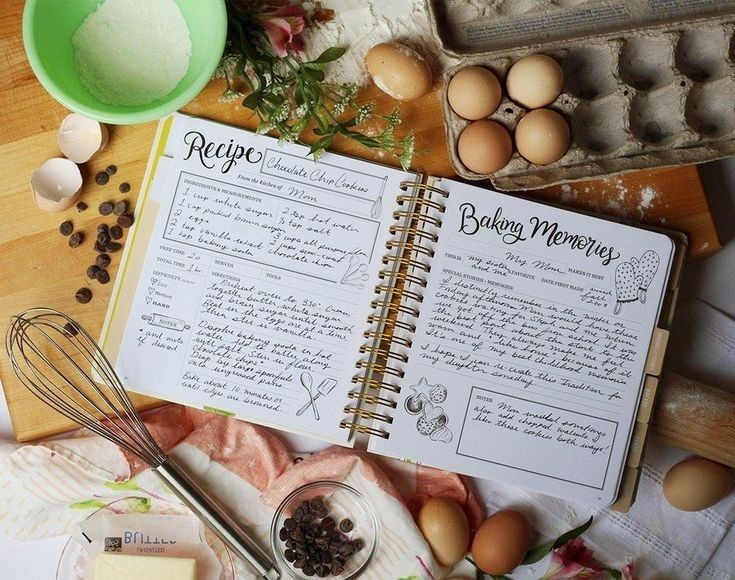

By Cooked
Home
Receitas salgadas
Receitas doces
Receitas vegetarianas
|
🧑🏻🍳 Usuário
Minhas Receitas Favoritas:

Receitas Favoritadas ❤️
Clique aqui para ver suas receitas favoritas!
Meus Indicadores:
N° Receitas Favoritadas
Nível de Usuário
Tipo Preferido